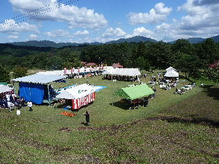
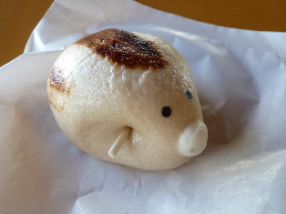
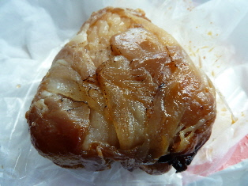

琴引フェスタに寄ってみました。
更新日 : 2011/09/23
飯南町の琴引ビレッジキャンプ場内多目的広場で、「琴引フェスタ」っていうイベントがやっていたので寄ってみました。

手前の青いシートのところにステージがあって、真ん中に日よけテント。両脇のテントは出店になっていました。 写っていないですが、左奥に広場があって、そこでは金魚すくいや運動系のゲームが催されていました。 広い会場ですね。

飯南の名物「いのっち」です。
肉まんって調味料味が強いと思うんですけど、いのっちはお肉の味がして好きです。

肉巻おにぎりも販売していました。
150円だったかな？お肉が沢山巻いてあって良かったです。
他にも地元の食品、他県のＢ級グルメが販売されていました。
お昼時に行ったので、色々見て買えてよかったです。